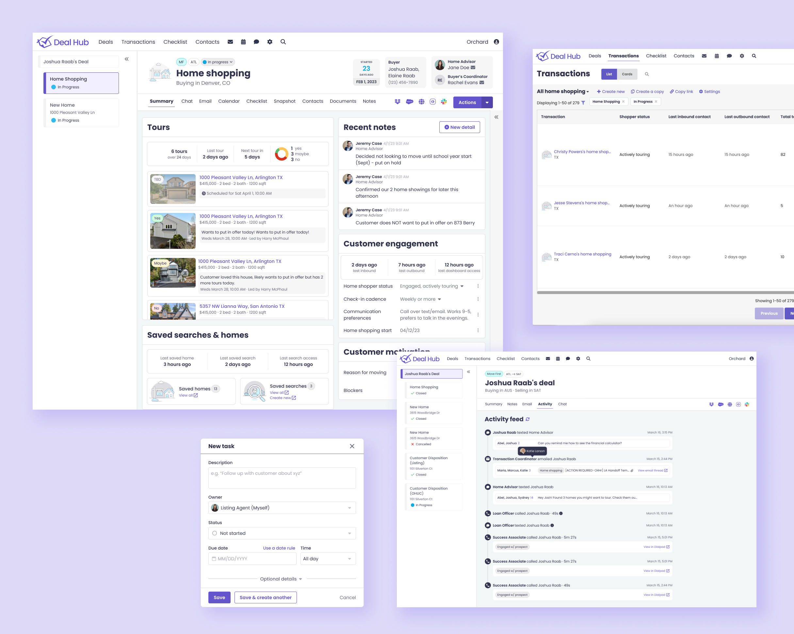
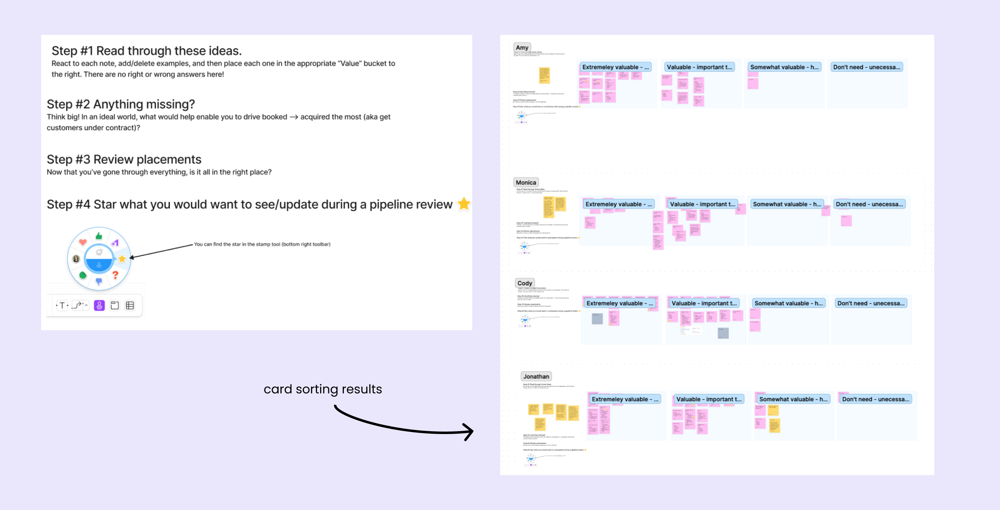
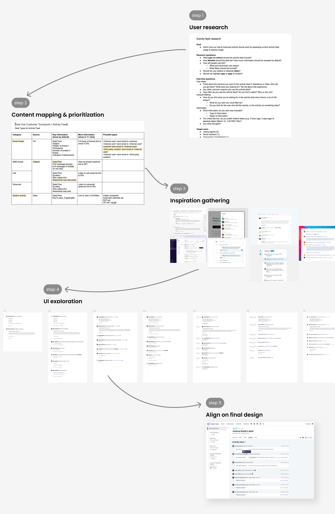
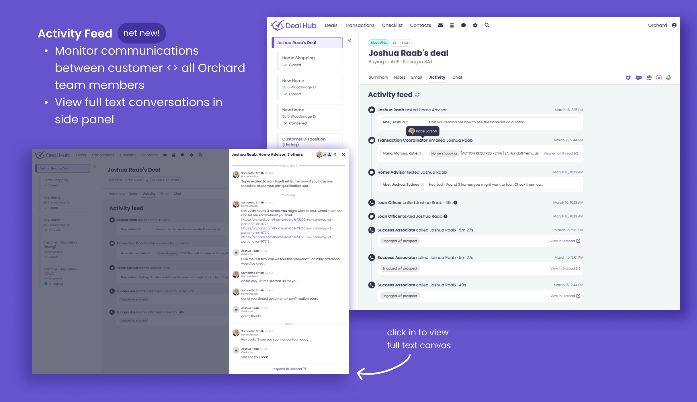
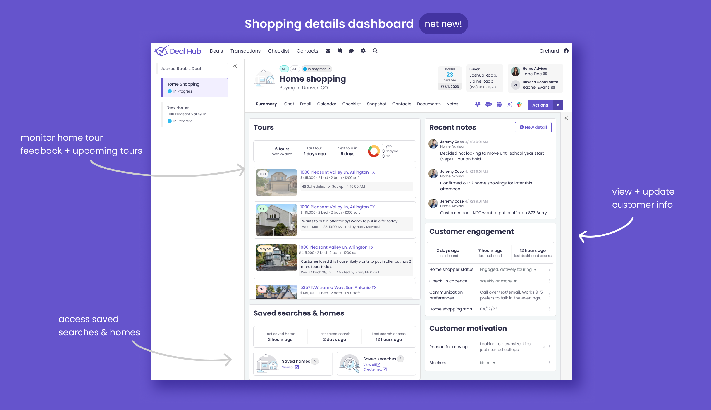

<!DOCTYPE html>
<html lang="en">

<head>
	<title>Emily Porat | Home Shopping</title>
	<link rel="stylesheet" type="text/css" href="styles/global.css">
	<link rel="stylesheet" type="text/css" href="styles/global-mobile.css">
	<link rel="stylesheet" type="text/css" href="styles/nav.css">
	<link rel="stylesheet" type="text/css" href="styles/projects.css">
	<script src="https://ajax.googleapis.com/ajax/libs/jquery/1.9.1/jquery.min.js"></script>
	<link rel="icon" type="image/x-icon" href="pics/favicon.svg"/>
	<!-- Icons -->
	<script defer src="https://use.fontawesome.com/releases/v5.13.0/js/all.js"></script>
	<script defer src="https://use.fontawesome.com/releases/v5.13.0/js/v4-shims.js"></script>
	<!-- Global site tag (gtag.js) - Google Analytics -->
	<script async src="https://www.googletagmanager.com/gtag/js?id=UA-119412150-1"></script>
	<script>
		window.dataLayer = window.dataLayer || [];
		function gtag(){dataLayer.push(arguments);}
		gtag('js', new Date());

		gtag('config', 'UA-119412150-1');

      // load other reused files
      $(function() {
      	$('#nav').load('http://emilyporat.com/nav.html');
      	$('#footer').load('http://emilyporat.com/footer.html');
      });
  </script>
</head>

</html>
<body class="preload">
	<meta name="viewport" content="width=device-width">
	<div id="nav"></div>
	<div id="arrow-up" onclick="slideUp()"><i class="fa fa-angle-up"></i></div>


	<div id="modal_background">
		<div id="prompt" class="pw_prompt">
		<label>Enter a password to view project:</label>
			<div>
				<input style="display: inline; margin-bottom: 0px; vertical-align:middle;" id="pw_prompt_input1" type="password"></input>
				<button style="display: inline; vertical-align:middle;" class="secondary-btn" onclick="checkPassword()">Submit</button>				
			</div>

		</div>
	</div>


	<div class="full-width" style="background-color: #6554CC; color: white">
		<div class="title-wrapper animate-reveal animate-first">
			<div class="title">
				<div>
					<h4>Orchard • 2023</h4>
					<h1 style="color: white">Home shopping</h1>
					<p class="p-XL">Improved internal real estate tooling and introduced new home shopping dashboard + customer activity feed.</p>
				</div>
			</div>
		</div> 

		
	</div>


	<div class="panel">
		<div class="body right">
			<div class="context-summary">

				<h2>Overview</h2>

				<p class="p-XL">
					I led research & design for a new home shopping dashboard & related tools that improved agent efficiency, tooling satisfaction, and will reduce external tool licensing costs.
				</p>

				<div class="space"></div>

				<div class="context-specifics">
					<div class="context-description">
						<h4>Start date</h4>
						<p>Feb 2023</p>
					</div>

					<div class="context-description">
						<h4>Release date</h4>
						<p>July 2023</p>
					</div>
					
					<div class="context-description">
						<h4>Team</h4>
						<p>Me, PM, Tech lead + 3 engineers</p>
					</div> 
				</div>

				<div class="space"></div>

				<h2>Background</h2>
				<p> Orchard is a real estate startup that offers streamlined services and tooling for consumers looking to buy and/or sell their home. Orchard employs its own real estate agents, internally called “Home Advisors,” who support customers throughout their home shopping & buying experience.
				</p>

				<div class="space"></div>

				<h3>Why invest in Home Shopping tooling?</h3>
				<p>
					
					<ul>
							<li>Customer acquisiton: Home Advisors play an integral role in customer acquisition - they are responsible for helping our customers find and close on their new homes.</li>
							<li>Operating costs & efficiency: HAs are one of our largest and most expensive teams, so there is a lot of value in driving efficiency for them.</li>
							<li>Licensing costs: Before this project, HAs were using Salesforce to manage their home shoppers. Transitioning them out of Salesforce and into Deal Hub, our homegrown internal platform, will save us thousands on licensing costs.</li>
					</ul>
				</p>

				<div class="space"></div>

		</div>
	</div>

	<div class="divider" style="background-color: var(--purple)"></div>
	
	<div class="panel">
		<div class="body right">
				<H2>Problem statement</H2>
				<p class="p-XL">How might we improve home shopping management tools so Home Advisors can more effectively serve their customers?</p>
		</div>

	</div>

	<div class="divider" style="background-color: var(--purple)"></div>

	<div class="panel">
		<div class="body right">

				<h2>The project</h2>

				<h3>Primary users</h3>
				<p>
					<ul>
						<li>Home Advisors (HAs) are licensed real estate agents who work on the “buy side” of a transaction (aka shopping for and purchasing their new home). </li>
						<li>HAs spend 20-30% of their time in the field meeting with customers for home tours and closings and the rest of their time doing computer work — writing contracts and checking in with customers.</li>
					</ul>
				</p>

				<div class="space"></div>

				<h3>Research + defining scope</h3>
				<p>First, my PM and I spoke with a number of existing Deal Hub users to understand existing functionality and usability gaps. Following that, we ran a 2-month beta program with a small group of HAs to ensure a smooth transition. Some activities included:</p>
					<ul>
						<li>Card-sorting: understand what information HAs need and want during the home shopping phase.</li>
						<li>Concept-testing: reviewed mid-fi designs and gathered feedback.</li>
						<li>Adoption: participants fully adopted Deal Hub and provided feedback on a weekly basis.</li>
					</ul>
				</p>

				<div class="full-width-mid-page">
					<div class="panel dark" style="text-align: center; background-color: white">
						
					</div>
				</div>

				<h3>Project scope + requirements</h3>
				<p>HAs were moving from Salesforce to Deal Hub, where we would need to support:</p>
					<ul>
						<li>Managing a pipeline of all home shoppers</li>
						<li>Viewing an activity feed of customer <> Orchard communications</li>
						<li>Updating information about customers & leaving notes</li>
						<li>Accessing customer’s saved homes & searches (via the Orchard customer dashboard)</li>
						<li>Viewing home tour feedback and upcoming tours</li>
						<li>Easily creating and checking off tasks</li>
					</ul>
				<div class="space"></div>
				<p>Most of this work was net-new functionality, but my PM and I also took the time to make strategic usability improvements to existing Deal Hub features.</p>

				<div class="space"></div>

				<h3>Design process - Activity Feed</h3>
				<p>For each of the above feature areas, I went through a mini design cycle. See below one example of what that looked like for creating a new Activity Feed.</p>

				<div class="space"></div>

				<h4>Step 1 - user research</h4>
				<ul>
					<li>Had 1-1 conversations with ~6 users. Our goals were to:</li>
					<li>Evaluate how well current activity content is serving users.</li>
					<li>Determine what type of content and level of detail to include.</li>
					<li>Establish primary use cases + user groups outside HAs.</li>
				</ul>

				<div class="space"></div>

				<h4>Step 2 - content mapping & prioritization</h4>
				<ul>
					<li>Reflected on what we'd learned was most important from research.</li>
					<li>Identified potential activity types (e.g. texts, calls, system activity etc.)</li>
					<li>Worked with PM to determine which activity types we would include in the MVP.</li>
					<li>Discussed with eng to ensure we had access to all the data we wanted to display.</li>
				</ul>

				<div class="space"></div>

				<h4>Step 3 - inspiration gathering</h4>
				<p>Scoured the internet for similar UI patterns to get the creative juices flowing.</p>

				<div class="space"></div>

				<h4>Step 4 - UI exploration</h4>
				<ul>
					<li>Started low-fi and worked up to high-fi.</li>
					<li>Experimented with different layouts, link styles, icons, imagery, etc.</li>
				</ul>

				<div class="space"></div>

				<h4>Step 5 - Align with eng on final design</h4>
				<ul>
					<li>Reviewed the final design with the team and answered questions.</li>
					<li>Documented new design system components.</li>
					<li>Discussed potential MVP+ fast follow features.</li>
				</ul>

				<div class="full-width-mid-page">
					<div class="panel dark" style="text-align: center; background-color: white">
						
					</div>
				</div>

				<div class="space"></div>
				<div class="space"></div>

				<h3>Final designs</h3>
				<p>We repeated a similar process for all the other features scoped in to this project. See an overview of the final designs below:</p>

				<div class="space"></div>

				<div class="space"></div>

				<div class="full-width-mid-page">
					<div class="panel dark" style="text-align: center; background-color: #6554CC">
						
						
						
						
					</div>
				</div>

				<div class="space"></div>


				<h3>Outcome</h3>
				<p>
					The new dashboard + related work was rolled out smoothly & on-time. We ran a survey to understand HA satisfaction a few weeks after release, and found:
					<ul>
						<li>Satisfaction with pipeline management, tasking, and communication remained flat. </li>
						<li>Satisfaction with managing new home closings increased (+26%).</li>
						<li>When asked if Deal Hub has made doing their jobs easier, 57% said yes, 29% were neutral, and 14% disagreed.</li>
					</ul>
					 
				</p>
				
				<div class="space"></div>

            <div class="so-what" style="background-color: rgba(160, 97, 213, .2); border-left: 10px solid var(--purple); ">
        		<h4>Want the full case study?</h4>
        		<p>Please <a href="mailto:emporat@gmail.com" target="_top">reach out directly</a> and I can share more details and designs.</p>
        	</div> 

			</div>


		</div>
	</div>
	  	
  	<div id="footer"></div>
  	</meta>
  </body>

  <script src="js/general.js"></script>

</html>